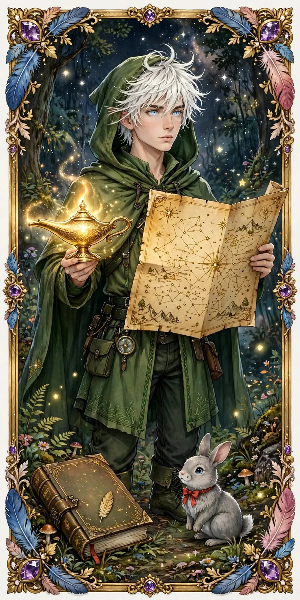
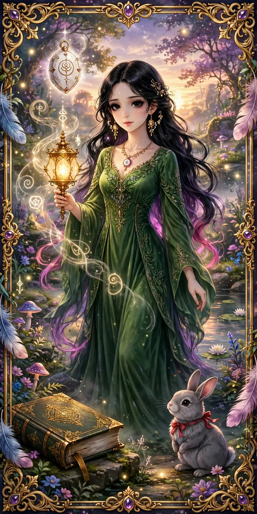
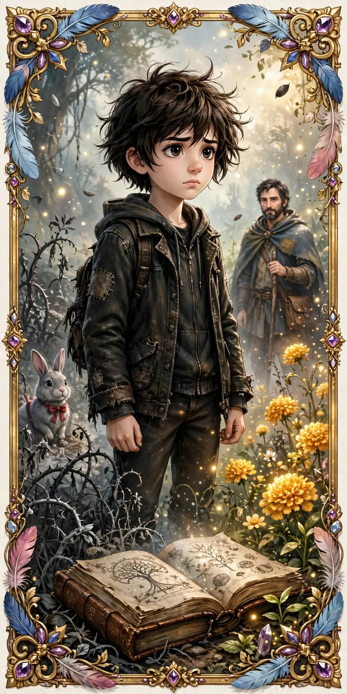
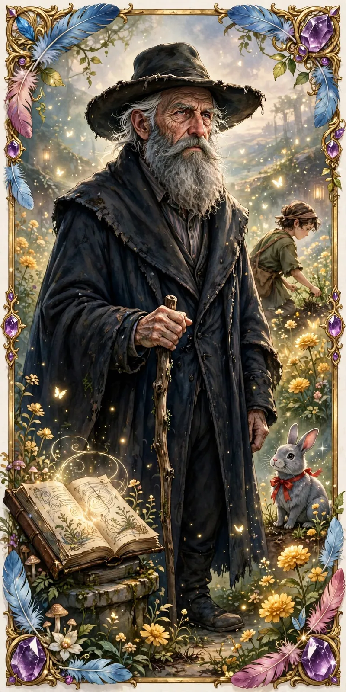
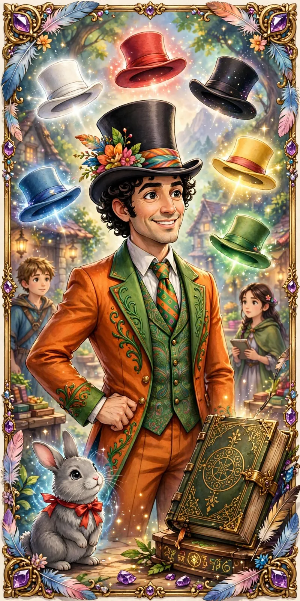
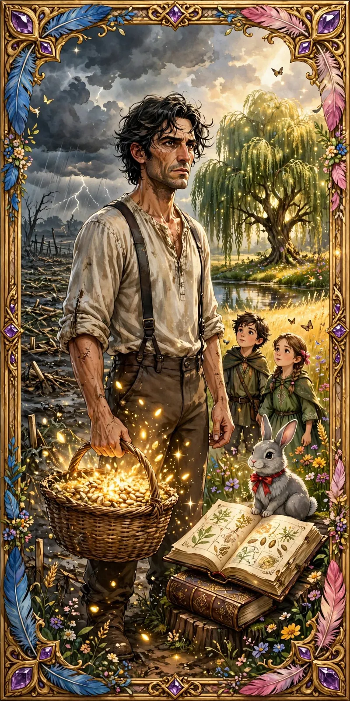
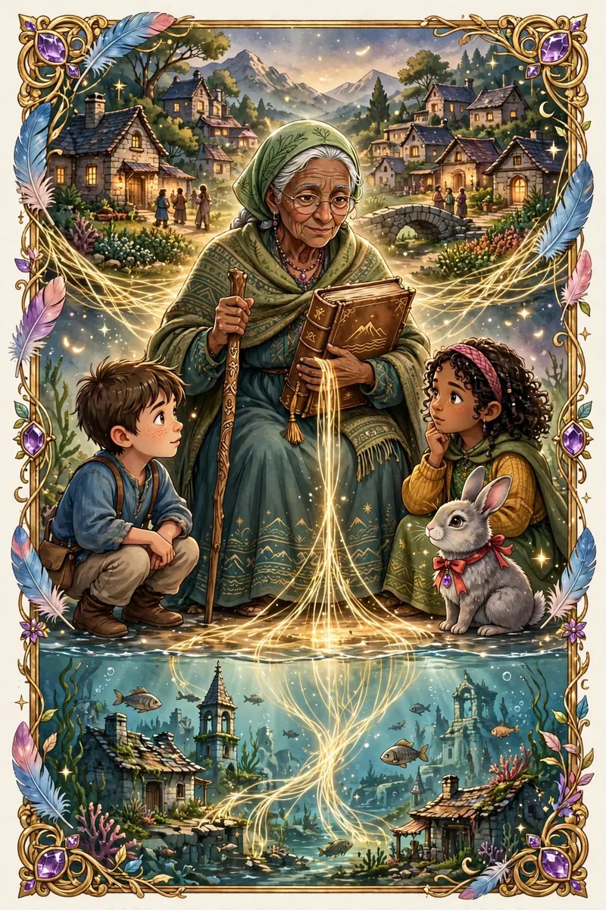
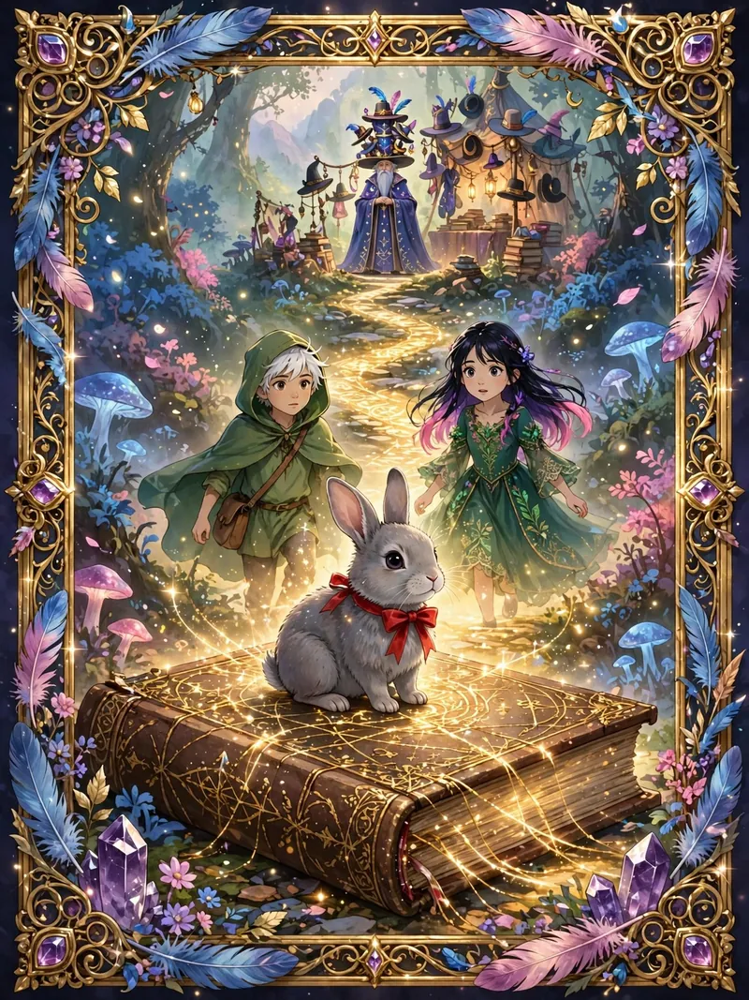
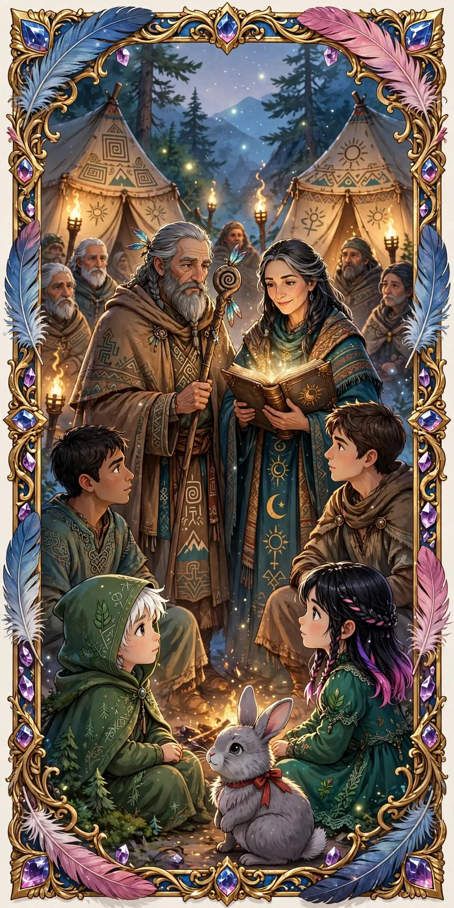

El Gran Libro de Fábulas
GaleríaPersonajes
Guardianes, guías y vecinos de un pueblo que aprende a leer sus propias historias. Cada ficha reúne su retrato, su personalidad, sus momentos clave y los capítulos donde aparece.
- Fichas
- 10
- Páginas de lectura
- 10
- Grupos
- 3


Galería
Elige un personaje
Filtra por grupo o escribe un nombre para encontrar su ficha.

Ficha 01 • GuardianesLiamEl Explorador Visionario“El verdadero conocimiento no solo reside en lo que se aprende, sino en el camino que se recorre para encontrarlo.”
Ficha 02 • GuardianesElaraLa Guardiana del Alma“Cada sombra guarda una historia por descubrir y cada corazón, una verdad por revelar.”
Ficha 03 • Pueblo y buscadoresAidesEl Buscador“La verdadera transformación comienza desde dentro.”
Ficha 04 • GuíasCallumEl Sabio“La verdadera enseñanza no está en dar respuestas, sino en guiar a otros hacia sus propias verdades.”
Ficha 05 • GuíasConsejero de SombrerosEl Visionario Creativo“Cada sombrero es una puerta hacia formas innovadoras de pensar.”
Ficha 06 • Pueblo y buscadoresTomásEl Resiliente“Aprender, caer, adaptarse y volver a florecer.”
Ficha 07 • GuíasMaríaLa Portadora de Historias“Cada relato antiguo es un puente entre lo que fuimos y lo que podemos ser.” Ficha 08 • Pueblo y buscadoresJavierEl Explorador de Patrones“Cada patrón oculto es una pista que une el pasado con el presente.”
Ficha 08 • Pueblo y buscadoresJavierEl Explorador de Patrones“Cada patrón oculto es una pista que une el pasado con el presente.”
Ficha 09 • GuíasConejo Grisáceo con Lazo RojoEl Guía Misterioso“Su aparición es enigmática pero constante, representando la oportunidad de cambio y el crecimiento continuo.”
Ficha 10 • GuíasSabios NómadasLos Portadores de Sabiduría Ancestral“A través de relatos y símbolos, facilitan el autodescubrimiento y la comprensión de la identidad.”
Ningún personaje coincide con tu búsqueda. Prueba con otro nombre o quita el filtro.
Apariciones
¿Quién aparece en qué capítulo?
Marcado donde el personaje se nombra o actúa en la página de lectura.
| Personaje | PPrólogo: El Legado | 01Capítulo 01: El Jardín | 02Capítulo 02: El Sauce del Reflejo | 03Capítulo 03: La Luz Interior | 04Capítulo 04: Las Llaves del Pensamiento | 05Capítulo 05: El Despertar de las Historias Ocultas | 06Capítulo 06: El Grano y la Paja de la Historia | 07Capítulo 07: El Libro Vivo y la Brújula Dorada | 08Capítulo 08: Sueños Paralelos y Revelaciones Internas | 09Capítulo 09: El Regreso de las Historias y el Circo de los Nómadas |
|---|---|---|---|---|---|---|---|---|---|---|
| Liam | Aparece | Aparece | Aparece | Aparece | Aparece | Aparece | Aparece | Aparece | Aparece | Aparece |
| Elara | Aparece | Aparece | Aparece | Aparece | Aparece | Aparece | Aparece | Aparece | Aparece | Aparece |
| Aides | No aparece | Aparece | Aparece | No aparece | No aparece | No aparece | No aparece | No aparece | No aparece | Aparece |
| Callum | No aparece | Aparece | No aparece | No aparece | No aparece | No aparece | No aparece | No aparece | No aparece | Aparece |
| Consejero | No aparece | No aparece | No aparece | No aparece | Aparece | No aparece | No aparece | No aparece | No aparece | No aparece |
| Tomás | No aparece | No aparece | No aparece | No aparece | No aparece | No aparece | No aparece | No aparece | No aparece | Aparece |
| María | No aparece | No aparece | No aparece | No aparece | No aparece | Aparece | Aparece | No aparece | No aparece | Aparece |
| Javier | No aparece | No aparece | No aparece | No aparece | No aparece | Aparece | Aparece | No aparece | No aparece | Aparece |
| Conejo | No aparece | No aparece | No aparece | No aparece | Aparece | Aparece | No aparece | Aparece | Aparece | Aparece |
| Sabios Nómadas | No aparece | No aparece | No aparece | No aparece | No aparece | No aparece | No aparece | No aparece | No aparece | Aparece |
- Prólogo El Legado
- Capítulo 01 El Jardín
- Capítulo 02 El Sauce del Reflejo
- Capítulo 03 La Luz Interior
- Capítulo 04 Las Llaves del Pensamiento
- Capítulo 05 El Despertar de las Historias Ocultas
- Capítulo 06 El Grano y la Paja de la Historia
- Capítulo 07 El Libro Vivo y la Brújula Dorada
- Capítulo 08 Sueños Paralelos y Revelaciones Internas
- Capítulo 09 El Regreso de las Historias y el Circo de los Nómadas
Rutas del Alma